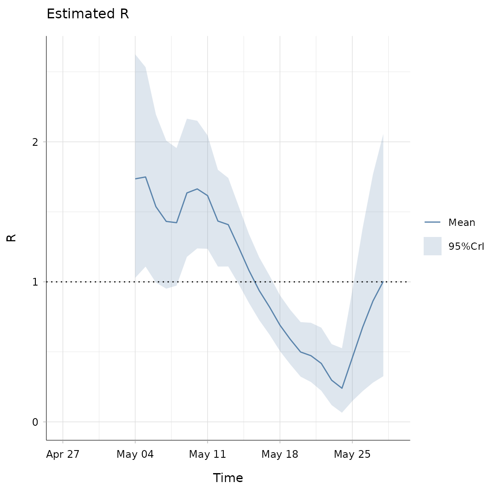
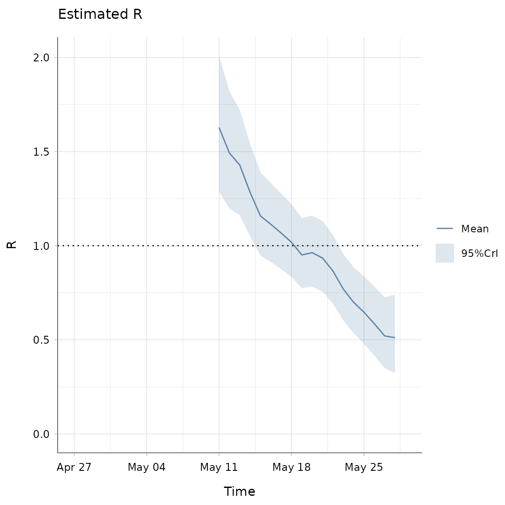
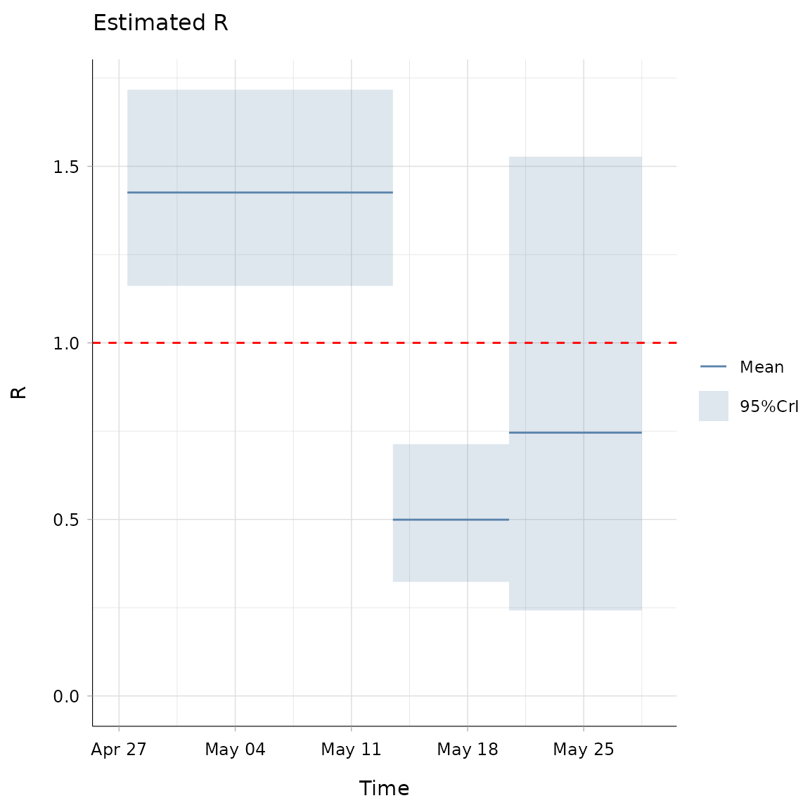
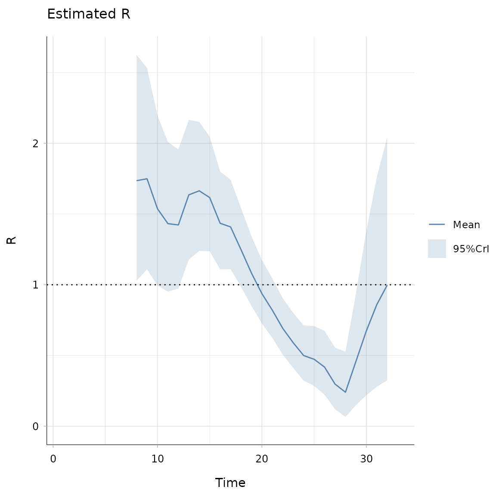
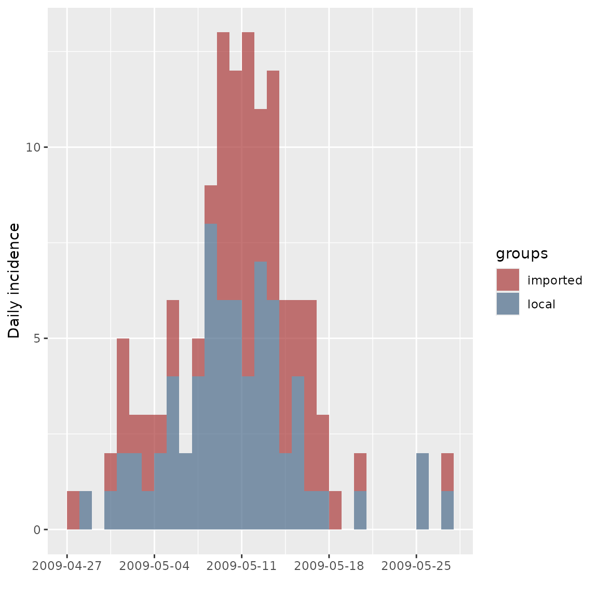

Overview
This vignette provides a short demonstration of the package. We consider a dataset containing information on pandemic influenza. The dataset contains:
the daily incidence of onset of acute respiratory illness (ARI, defined as at least two symptoms among fever, cough, sore throat, and runny nose) amongst children in a school in Pennsylvania during the 2009 H1N1 influenza pandemic (see Cauchemez et al., PNAS, 2011),
the discrete daily distribution of the serial interval (time interval between symptoms onset in a case and in their infector) for influenza, assuming a shifted Gamma distribution with mean 2.6 days, standard deviation 1.5 days and shift 1 day (as in Ferguson et al., Nature, 2005).
interval-censored serial interval data from the 2009 outbreak of H1N1 influenza in San Antonio, Texas, USA (from Morgan et al., EID 2010).
library(EpiEstim)
library(ggplot2)
## load data
data(Flu2009)
## incidence:
head(Flu2009$incidence)
#> dates I
#> 1 2009-04-27 1
#> 2 2009-04-28 1
#> 3 2009-04-29 0
#> 4 2009-04-30 2
#> 5 2009-05-01 5
#> 6 2009-05-02 3
## serial interval (SI) distribution:
Flu2009$si_distr
#> [1] 0.000 0.233 0.359 0.198 0.103 0.053 0.027 0.014 0.007 0.003 0.002 0.001
## interval-ceonsored serial interval data:
## each line represents a transmission event,
## EL/ER show the lower/upper bound of the symptoms onset date in the infector
## SL/SR show the same for the secondary case
## type has entries 0 corresponding to doubly interval-censored data
## (see Reich et al. Statist. Med. 2009).
head(Flu2009$si_data)
#> EL ER SL SR type
#> 1 0 1 7 8 0
#> 2 0 1 2 3 0
#> 3 0 1 3 4 0
#> 4 0 1 2 5 0
#> 5 0 1 1 9 0
#> 6 0 1 2 4 0We can use the incidence R package to easily plot the daily incidence data:
library(incidence)
plot(as.incidence(Flu2009$incidence$I, dates = Flu2009$incidence$dates))
#> Warning: The `guide` argument in `scale_*()` cannot be `FALSE`. This was deprecated in
#> ggplot2 3.3.4.
#> ℹ Please use "none" instead.
#> ℹ The deprecated feature was likely used in the incidence package.
#> Please report the issue at <https://github.com/reconhub/incidence/issues>.
#> This warning is displayed once every 8 hours.
#> Call `lifecycle::last_lifecycle_warnings()` to see where this warning was
#> generated.We can run estimate_R on the incidence data to estimate the reproduction number R. For this, we need to specify i) the time window(s) over which to estimate R and ii) information on the distribution of the serial interval.
For i), the default behavior is to estimate R over weekly sliding windows. This can be changed through the config$t_start and config$t_end arguments (see below, “Changing the time windows for estimation”). For ii), there are several options, specified in the method argument.
The simplest is the parametric_si method, where you only specify the mean and standard deviation of the SI.
Estimating R on sliding weekly windows, with a parametric serial interval
In this example, we only specify the mean and standard deviation of the serial interval. In that case an offset gamma distribution is used for the serial interval. In the following example, we use the mean and standard deviation of the serial interval for flu from Ferguson et al., Nature, 2005:
res_parametric_si <- estimate_R(Flu2009$incidence,
method="parametric_si",
config = make_config(list(
mean_si = 2.6,
std_si = 1.5))
)
#> Default config will estimate R on weekly sliding windows.
#> To change this change the t_start and t_end arguments.
head(res_parametric_si$R)
#> t_start t_end Mean(R) Std(R) Quantile.0.025(R) Quantile.0.05(R)
#> 1 2 8 1.735798 0.4091314 1.0287437 1.121933
#> 2 3 9 1.749168 0.3647267 1.1088223 1.195480
#> 3 4 10 1.537058 0.3074116 0.9947030 1.068694
#> 4 5 11 1.431839 0.2705921 0.9514466 1.017661
#> 5 6 12 1.422725 0.2515046 0.9731426 1.035808
#> 6 7 13 1.635373 0.2523436 1.1786332 1.243590
#> Quantile.0.25(R) Median(R) Quantile.0.75(R) Quantile.0.95(R)
#> 1 1.445198 1.703761 1.991520 2.458972
#> 2 1.491345 1.723884 1.979457 2.389121
#> 3 1.320090 1.516613 1.731761 2.075176
#> 4 1.241251 1.414830 1.603900 1.904047
#> 5 1.245996 1.407932 1.583340 1.860107
#> 6 1.458847 1.622413 1.797779 2.071372
#> Quantile.0.975(R)
#> 1 2.624781
#> 2 2.533119
#> 3 2.195540
#> 4 2.008849
#> 5 1.956336
#> 6 2.165745The output of the estimate_r function is a list containing a number of elements, the most important of which is R, a data.frame containing details on the estimated reproduction number. Each line corresponds to one time window.
The output can be plotted as follows:
plot(res_parametric_si, legend = FALSE)
# use `type = "R"`, `type = "incid"` or `type = "SI"`
# to generate only one of the 3 plotsThis produces three graphs showing the incidence time series, the estimated reproduction number (posterior mean and 95\% credible interval, with estimates for a time window plotted at the end of the time window) and the discrete distribution of the serial interval.
Estimating R with a non parametric serial interval distribution
If one already has a full distribution of the serial interval, and not only a mean and standard deviation, this can be fed into estimate_r as follows:
res_non_parametric_si <- estimate_R(Flu2009$incidence,
method="non_parametric_si",
config = make_config(list(
si_distr = Flu2009$si_distr))
)
#> Default config will estimate R on weekly sliding windows.
#> To change this change the t_start and t_end arguments.
# si_distr gives the probability mass function of the serial interval for
# time intervals 0, 1, 2, etc.
plot(res_non_parametric_si, "R")
Note that you can obtain such a full distribution of the serial interval using discr_si function (this is how Flu2009$si_distr was obtained, with additional rounding):
discr_si(0:20, mu = 2.6, sigma = 1.5)
#> [1] 0.000000e+00 2.331721e-01 3.585794e-01 1.981108e-01 1.033427e-01
#> [6] 5.290518e-02 2.682146e-02 1.351620e-02 6.783438e-03 3.394351e-03
#> [11] 1.694674e-03 8.445945e-04 4.203313e-04 2.089422e-04 1.037609e-04
#> [16] 5.148480e-05 2.552773e-05 1.264952e-05 6.264667e-06 3.101068e-06
#> [21] 1.534394e-06Estimating R accounting for uncertainty on the serial interval distribution
Sometimes, especially early in outbreaks, the serial interval distribution can be poorly specified. Therefore estimate_R also allows integrating results over various distributions of the serial interval. To do so, the mean and sd of the serial interval are each drawn from truncated normal distributions, with parameters specified by the user, as in the example below:
## we choose to draw:
## - the mean of the SI in a Normal(2.6, 1), truncated at 1 and 4.2
## - the sd of the SI in a Normal(1.5, 0.5), truncated at 0.5 and 2.5
config <- make_config(list(mean_si = 2.6, std_mean_si = 1,
min_mean_si = 1, max_mean_si = 4.2,
std_si = 1.5, std_std_si = 0.5,
min_std_si = 0.5, max_std_si = 2.5))
res_uncertain_si <- estimate_R(Flu2009$incidence,
method = "uncertain_si",
config = config)
#> Default config will estimate R on weekly sliding windows.
#> To change this change the t_start and t_end arguments.
plot(res_uncertain_si, legend = FALSE)
## the third plot now shows all the SI distributions consideredNote that the results above are obtained numerically and thus can be slower to compute. You can adjust the parameters governing the sample sizes by altering the default values of config$n1 and config$n2 (n1 is the number of pairs of mean and sd of the SI that are drawn and n2 is the size of the posterior sample drawn for each pair of mean, sd of SI).
Estimating R and the serial interval using data on pairs infector/infected
Usually, the serial interval distribution is estimated using data on the date of symptoms onset in pairs of infectors / infected individuals. The serial interval distribution estimate is then fed into reproduction number estimates. Typically, a single SI distribution is used to estimate the reproduction number throughout an outbreak.
This approach doesn’t account for uncertainty in the serial interval distribution, and doesn’t allow to incorporate data collected later in the outbreak which could inform the serial interval distribution.
In estimate_R, we now allow the serial interval distribution to be directly estimated, using MCMC, from interval censored exposure data. The reproduction number is then estimated using the posterior distribution of the SI, hence accounting for the uncertainty associated with this estimate.
As the epidemic progresses, newly collected exposure data can be incorporated to update the serial interval estimate.
This method is new to EpiEstim and described in a manuscript in preparation (Thompson et al.).
The Flu2009 dataset contains interval-censored serial interval data from the 2009 outbreak of H1N1 influenza in San Antonio, Texas, USA (from Morgan et al., EID 2010).
## interval-ceonsored serial interval data:
## each line represents a transmission event,
## EL/ER show the lower/upper bound of the symptoms onset date in the infector
## SL/SR show the same for the secondary case
## type has entries 0 corresponding to doubly interval-censored data
## (see Reich et al. Statist. Med. 2009).
head(Flu2009$si_data)
#> EL ER SL SR type
#> 1 0 1 7 8 0
#> 2 0 1 2 3 0
#> 3 0 1 3 4 0
#> 4 0 1 2 5 0
#> 5 0 1 1 9 0
#> 6 0 1 2 4 0These can be used to estimate the SI within estimate_R, and produce estimates of the reproduction number based on the full SI posterior distribution:
## fixing the random seeds
MCMC_seed <- 1
overall_seed <- 2
mcmc_control <- make_mcmc_control(seed = MCMC_seed,
burnin = 1000)
dist <- "G" # fitting a Gamma dsitribution for the SI
config <- make_config(list(si_parametric_distr = dist,
mcmc_control = mcmc_control,
seed = overall_seed,
n1 = 50,
n2 = 50))
res_si_from_data <- estimate_R(Flu2009$incidence,
method = "si_from_data",
si_data = Flu2009$si_data,
config = config)
#> Default config will estimate R on weekly sliding windows.
#> To change this change the t_start and t_end arguments.
#> Running 1500 MCMC iterations
#> MCMCmetrop1R iteration 1 of 1500
#> function value = -27.68336
#> theta =
#> 1.67335
#> -0.27928
#> Metropolis acceptance rate = 0.00000
#>
#> MCMCmetrop1R iteration 1001 of 1500
#> function value = -29.17093
#> theta =
#> 1.07173
#> 0.18715
#> Metropolis acceptance rate = 0.54246
#>
#>
#>
#> @@@@@@@@@@@@@@@@@@@@@@@@@@@@@@@@@@@@@@@@@@@@@@@@@@@@@@@@@
#> The Metropolis acceptance rate was 0.55267
#> @@@@@@@@@@@@@@@@@@@@@@@@@@@@@@@@@@@@@@@@@@@@@@@@@@@@@@@@@
#>
#> Gelman-Rubin MCMC convergence diagnostic was successful.
#>
#> @@@@@@@@@@@@@@@@@@@@@@@@@@@@@@@@@@@@@@@@@@@@@@@@@@@@@@@@@
#> Estimating the reproduction number for these serial interval estimates...
#> @@@@@@@@@@@@@@@@@@@@@@@@@@@@@@@@@@@@@@@@@@@@@@@@@@@@@@@@@
plot(res_si_from_data, legend = FALSE)
## the third plot now shows the posterior sample of SI distributions
## that were integrated overNow say you want to save your estimates of the serial interval first, and then use them within estimate_R. This can be useful e.g. if you want to explore several time windows for R estimation, but based on the same SI data, and so you don’t want to run the MCMC to estimate the SI within estimate_R every time. You can do this as follow:
## using the same random seeds as before to be able to compare results
## first estimate the SI distribution using function dic.fit.mcmc fron
## coarseDataTools package:
n_mcmc_samples <- config$n1*mcmc_control$thin
SI_fit <- coarseDataTools::dic.fit.mcmc(dat = Flu2009$si_data,
dist = dist,
init.pars = init_mcmc_params(Flu2009$si_data, dist),
burnin = mcmc_control$burnin,
n.samples = n_mcmc_samples,
seed = mcmc_control$seed)
#> Running 1500 MCMC iterations
#> MCMCmetrop1R iteration 1 of 1500
#> function value = -27.68336
#> theta =
#> 1.67335
#> -0.27928
#> Metropolis acceptance rate = 0.00000
#>
#> MCMCmetrop1R iteration 1001 of 1500
#> function value = -29.17093
#> theta =
#> 1.07173
#> 0.18715
#> Metropolis acceptance rate = 0.54246
#>
#>
#>
#> @@@@@@@@@@@@@@@@@@@@@@@@@@@@@@@@@@@@@@@@@@@@@@@@@@@@@@@@@
#> The Metropolis acceptance rate was 0.55267
#> @@@@@@@@@@@@@@@@@@@@@@@@@@@@@@@@@@@@@@@@@@@@@@@@@@@@@@@@@
## thinning the output of the MCMC and converting using coarse2estim function
si_sample <- coarse2estim(SI_fit, thin = mcmc_control$thin)$si_sample
res_si_from_sample <- estimate_R(Flu2009$incidence,
method = "si_from_sample",
si_sample = si_sample,
config = make_config(list(n2 = 50,
seed = overall_seed)))
#> Default config will estimate R on weekly sliding windows.
#> To change this change the t_start and t_end arguments.
## check that res_si_from_sample is the same as res_si_from_data
## since they were generated using the same MCMC algorithm to generate the SI
## sample (either internally to EpiEstim or externally)
all(res_si_from_sample$R$`Mean(R)` == res_si_from_data$R$`Mean(R)`)
#> [1] TRUEChanging the time windows for estimation
The time window can be specified through arguments config$t_start and config$t_end. For instance, the default weekly sliding windows can also be obtained by specifying:
T <- nrow(Flu2009$incidence)
t_start <- seq(2, T-6) # starting at 2 as conditional on the past observations
t_end <- t_start + 6 # adding 6 to get 7-day windows as bounds included in window
res_weekly <- estimate_R(Flu2009$incidence,
method="parametric_si",
config = make_config(list(
t_start = t_start,
t_end = t_end,
mean_si = 2.6,
std_si = 1.5))
)
plot(res_weekly, "R") For biweekly estimates:
t_start <- seq(2, T-13) # starting at 2 as conditional on the past observations
t_end <- t_start + 13
res_biweekly <- estimate_R(Flu2009$incidence,
method="parametric_si",
config = make_config(list(
t_start = t_start,
t_end = t_end,
mean_si = 2.6,
std_si = 1.5))
)
plot(res_biweekly, "R") 
So far we have used estimates on sliding windows. Sometimes it may be useful to consider consecutive non overlapping windows as well. For instance, in the flu outbreak we are considering, the school closed from 14th to 20th May 2009, i.e. days 18 to 24 in our dataset (Cauchemez et al., PNAS, 2011). It is interesting to estimate the reproduction number before, during, and after the school closure to assess whether this had an impact on transmissibility.
t_start <- c(2, 18, 25) # starting at 2 as conditional on the past observations
t_end <- c(17, 24, 32)
res_before_during_after_closure <- estimate_R(Flu2009$incidence,
method="parametric_si",
config = make_config(list(
t_start = t_start,
t_end = t_end,
mean_si = 2.6,
std_si = 1.5))
)
plot(res_before_during_after_closure, "R") +
geom_hline(aes(yintercept = 1), color = "red", lty = 2)
The results above suggest that the school closure was effective in terms of reducing transmissibility, as the estimated reproduction number during the school closure was significantly lower than that before closure, and was estimated to be under the threshold value 1.
Different ways of specifying the incidence
So far we have specified the incid argument using a table with two columns indicating the dates and the number of incident cases for each date.
estimate_R accepts a range of formats for its incid argument.
This can be a table, as we’ve seen. In that case there needs to be a column called I containing the number of incident cases. If a column dates is present it is used in the x-axes when producing plots:
head(Flu2009$incidence)
#> dates I
#> 1 2009-04-27 1
#> 2 2009-04-28 1
#> 3 2009-04-29 0
#> 4 2009-04-30 2
#> 5 2009-05-01 5
#> 6 2009-05-02 3
config <- make_config(list(mean_si = 2.6, std_si = 1.5))
res_incid_table <- estimate_R(Flu2009$incidence,
method="parametric_si",
config = config)
#> Default config will estimate R on weekly sliding windows.
#> To change this change the t_start and t_end arguments.
plot(res_incid_table, "R")
It can just be a vector (but then the x-axis in your plots is measured in time steps since start of the outbreak)
res_incid_vector <- estimate_R(Flu2009$incidence$I,
method="parametric_si",
config = config)
#> Default config will estimate R on weekly sliding windows.
#> To change this change the t_start and t_end arguments.
plot(res_incid_vector, "R")
Finally, incid can be an object of the class incidence, as created for instance by the function incidence of the incidence package.
Let’s artificially create a line-list corresponding to our flu incidence data:
dates_onset <- Flu2009$incidence$dates[unlist(lapply(seq_len(nrow(Flu2009$incidence)), function(i)
rep(i, Flu2009$incidence$I[i])))]and now use the incidence function to generate an object that we feed to estimate_R:
last_date <- Flu2009$incidence$date[T]
res_incid_class <- estimate_R(incidence(dates_onset, last_date = last_date),
method="parametric_si",
config = config)
#> Default config will estimate R on weekly sliding windows.
#> To change this change the t_start and t_end arguments.
plot(res_incid_class, "R")
Specifying imported cases
All of the above assumes that all cases are linked by local transmission. Sometimes you may have information (from field epidemiological investigations for instance) indicating that some cases are in fact imported (from another location, or from an animal reservoir). We allow to include such information, when available, as illustrated in the example below:
# generating fake information on our cases:
location <- sample(c("local","imported"), length(dates_onset), replace=TRUE)
location[1] <- "imported" # forcing the first case to be imported
## get incidence per group (location)
incid <- incidence(dates_onset, groups = location)
plot(incid)
## Estimate R with assumptions on serial interval
res_with_imports <- estimate_R(incid, method = "parametric_si",
config = make_config(list(
mean_si = 2.6, std_si = 1.5)))
#> Default config will estimate R on weekly sliding windows.
#> To change this change the t_start and t_end arguments.
plot(res_with_imports, add_imported_cases=TRUE)
#> The number of colors (8) did not match the number of groups (2).
#> Using `col_pal` instead.Note that in the above the estimated reproduction number is, as expected, much lower than estimated before when assuming that all cases were linked by local transmission.
This feature is new to EpiEstim and described in a manuscript in preparation (Thompson et al.).
EpiEstimApp
We have a shiny app in development which integrates all the features presented above. You can follow its developments here: https://github.com/jstockwin/EpiEstimApp Please note the app is still in development!